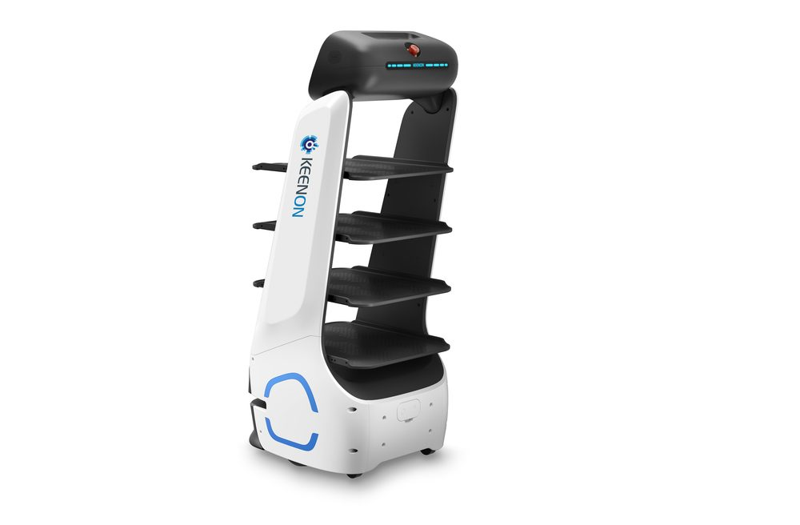
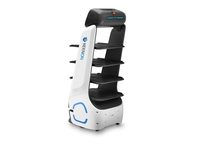
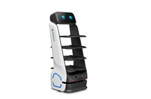
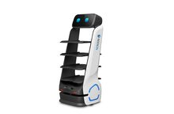
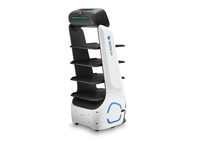

Servier- und Lieferroboter mit hoher Tragfähigkeit für Restaurant und Hotellerie.





11,6-Zoll-HD-Touchscreen, ergonomisch, im Stehen und Sitzen bedienbar.
Mehrfachgelenk-Dämpfung und PID-Regelalgorithmus für sanfte, stabile Fahrten.
4x10 kg Traglast, verstellbares Tablettdesign.
Konfigurierbare Betriebszeiten, automatische Rückkehr zur Ladestation.
| Abmessungen | 50,0 x 52,7 x 126,6 cm |
| Gewicht | 63 kg |
| Tragfähigkeit gesamt | 40 kg |
| Geschwindigkeit | 0,8 m/s |
| Min. Durchfahrtsbreite | 70 cm |
| Touchscreen | 11,6 Zoll |
| Akkulaufzeit | bis zu 18 Stunden |
Offizielle Produktinformationen des Herstellers KEENON. Technische Daten dienen als Orientierung.
Der DINERBOT T9 ist vielseitig einsetzbar – ob im Pflegeheim als Unterstützung bei Lieferungen oder im Restaurant als Liefer- und Abholkraft.
Der T9 übernimmt im Schnellrestaurant den kompletten Tischservice. Das Personal kann sich auf die Essenszubereitung konzentrieren – das spart Laufwege und Wartezeiten und macht den Besuch zum Erlebnis.
Im Pflegeheim liefert der T9 Mahlzeiten direkt an die Tische. Das reduziert Laufwege erheblich, entlastet das Personal und beugt Verletzungen vor. Die Bewohnerinnen und Bewohner reagieren durchweg positiv.
Eine Flotte von T9 optimiert hier den Abtransport von Geschirr über ein smartes Ruf-System. Gäste fordern den Roboter gezielt an, das reduziert die Laufwege des Personals deutlich und Tische werden schneller wieder frei.